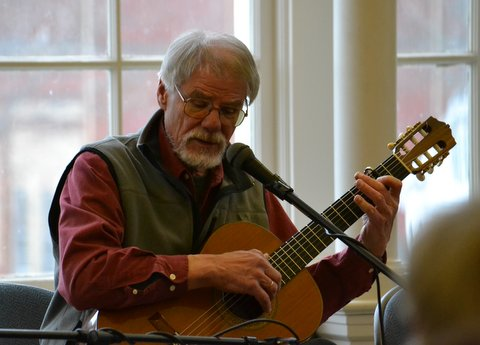

|
 Gordon Bok grew up around the boatyards of Camden, Maine. In his early years, he worked on a variety of vessels, from passenger schooners to yachts. He learned many tunes, sea songs, stories, legends and ballads from the people he worked with. Where he couldn't find songs that matched his experiences or needs, he began to write his own, and has kept up a lively flow of poems, songs, stories, choral and instrumental works. He has He has performed extensively in the United States, and in the United Kingdom, Australia, and New Zealand. He has appeared on the radio show "A Prairie Home Companion" with Garrison Keillor. Gordon's music has been sung by many other performers and has been used for films, most notably the documentary "Coaster: The Adventure of the John F. Leavitt" for which he won an award. Gordon received an honorary Doctorate of Science from the Maine Maritime Academy for his reflection of Maine's maritime heritage in his compositions and performances. His legacy includes over thirty recordings featuring his own compositions and folk tunes from around the world. His extensive repertoire provides a rich well to draw upon for his concerts; he has never sung the same solo concert twice. "I refuse to tell my audiences what to think or feel: I respect them too much for that. I will sing them what I honor and trust, and trust them to sort out what they can use. "I'm drawn to songs that show me how others have lived their lives and sorted through their problems – that's the great wisdom in traditional music, and in the songs that will become the tradition in other generations. They've shown me how to live, and if others learn something from my passing them on, that's another pleasure." |